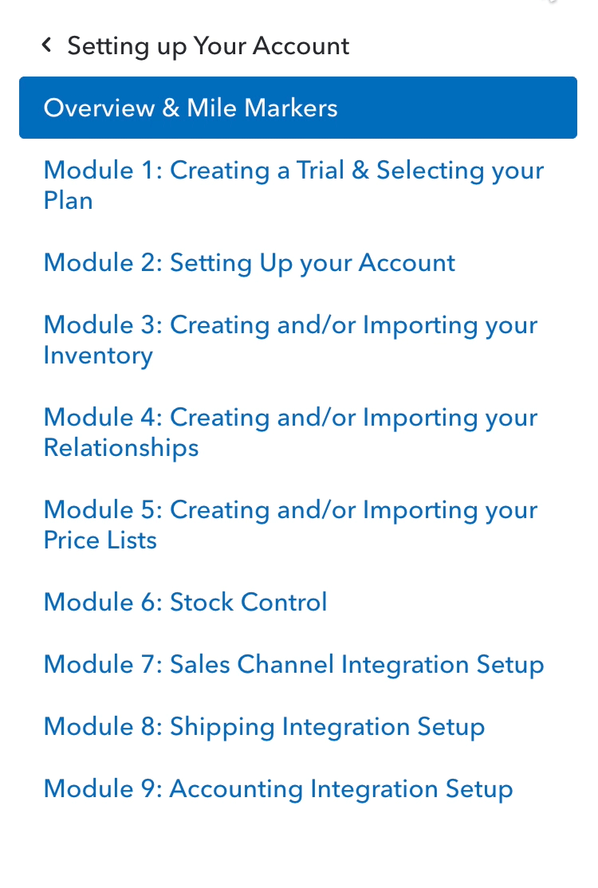

2018 — 2020 ✴ Web design & development, A/B Testing, Design systems, CRO & SEO
TradeGecko
TradeGecko is a software that helps small businesses manage their inventory. Here are some selected work that I’ve done in the 2+ years I worked as its web designer + developer.
Homepage and pricing page
Free tools
To improve the SEO on our existing free tools pages, I was asked to develop a free online version of the tools that can be accessible on the page itself without downloading anything. Some examples include Shipping Label Generator, Reorder Point Calculator, and Sales Forecast Tool.

Improving the knowledge center
The knowledge center houses over 900 support articles. I collaborated with another designer to execute the design mockups. The new theme makes the support site more consistent with the marketing site in terms of branding and navigation.
To make it easier to navigate, I added a dynamic list of categories and articles on the sidebar so that the user does not have to leave the current page to browse the contents of the knowledge center.
Blog refresh
Prior to the redesign, the blog is just a paginated collection of all posts sorted by publish date. With the new design, the recently published posts are shown per category. A list of popular posts has been added as well. The new design allows more content to be showcased and promotes the different categories in the blog.
Enhancing the Careers page
For a growing start up, talent acquisition was important. To support this, the careers page is redesigned to improve the UX and to show more of the company's culture.
- Video background: Added existing footage from company events on the background of the masthead
- Filters: Added department and location-based filters, grouped the jobs by department.
Tools used
Hubspot, Google Analytics, Hotjar, SEMrush, HTML/CSS/JS